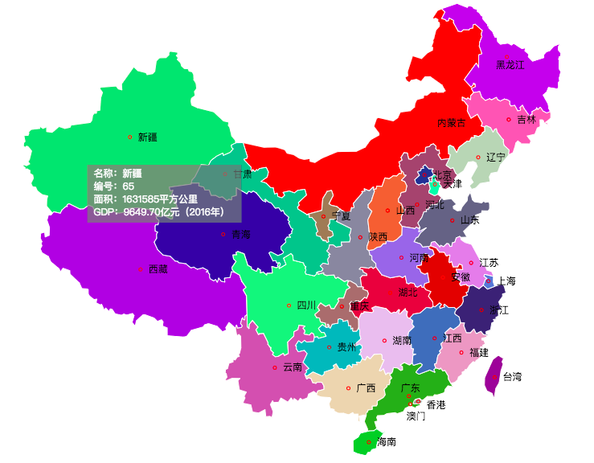

这一部分将对clay.js做一个简要的介绍，主要是库关注的问题、如何更好的使用、需要注意的方面和获取帮助等基本问题。
首先，本库是为了Web端数据可视化而建立的，如果用更通俗的话说，就是为了方便使用HTML + CSS + ES绘制各种2D和3D图形来反映统计的数据，并且绘制的图形是可交互的。
右图绘制的是一个彩色的2D中国地图，鼠标悬浮所在的地区会显示该地区的一些信息。这是一个简单的例子，通过交互的图形展示数据一方面更直观，另一方面也有更好的用户体验。
和别的库不同的是，clay.js关注的重点是绘图过程中繁琐的操作和复杂的计算部分，通过提供更友好的操作接口和丰富而基础的计算接口来加速绘图。除此之外，不会也不喜欢强迫使用者改变自己的代码习惯，或者说在尽可能的情况下，保证灵活性。
如果你开发的是一个web项目，直接在页面引入打包后的文件后即可：
<script src="./build/clay-core.min.js" type="text/javascript"></script>
如果你想通过npm方式管理，首先你需要通过命令行安装clay.js：
npm install --save clay-core
安装好了，可以这样调用：
import render from 'clay-core'; // 启动clay let clay=render(window); // 基本配置(可以不配置，使用默认值) clay.config(...); ... // 导出，供别的模块使用 export default clay;
需要特别声明一下：clay.js的目的不是创建一种新的环境（比如框架的感觉），然后在里面绘图，而是对原生开发的一种加强。
但是，并不意味着你应该把她看成方法的集合，这不益于你的使用。事实是，的确有非常多且独立的方法供使用，比如插值计算和经纬度的坐标映射等，只不过对于如数据和结点之间的维护、区域管理者和canvas2D图层管理者等，特别是webgl3D部分，都是经过一定的设计，不应该是独立的方法，这些请在例子和使用中慢慢体会。
无论何时，在使用clay.js绘制图形的时候，如果遇到任何疑惑或问题，请先在 Github issue 上查找是否存在相同问题，如果依旧无法解决，可以根据问题的类别进行提问，除非特殊情况，你会在24小时内获得回复。
如果你对clay.js本身有非常好的建议或发现了重大bug，除了在上面地址中提问，请额外再提供一份更详细的说明，邮件发送给作者的 G-Mail ，方便及时改进或修复。